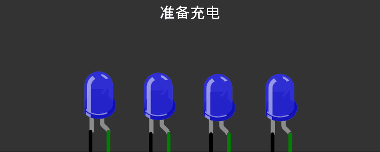
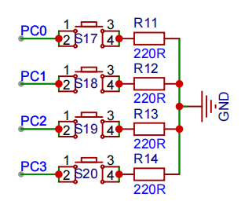

<!DOCTYPE lake>
<h2 data-lake-id="HRvtv" id="HRvtv"><span data-lake-id="u9f9d91d3" id="u9f9d91d3">学习目标</span></h2><ol list="u8a1d3031"><li data-lake-id="u740df546" fid="u59ab7111" id="u740df546"><span data-lake-id="ufc2812b7" id="ufc2812b7">能够分析业务</span></li><li data-lake-id="udf6b5efd" fid="u59ab7111" id="udf6b5efd"><span data-lake-id="u64a9300d" id="u64a9300d">能够基于需求进行bsp驱动封装</span></li><li data-lake-id="u656e131f" fid="u59ab7111" id="u656e131f"><span data-lake-id="u676125c8" id="u676125c8">能够使用多任务框架</span></li></ol><p data-lake-id="u978cdabb" id="u978cdabb"><span data-lake-id="u49388959" id="u49388959">​</span><br/></p><h2 data-lake-id="MSieG" id="MSieG"><span data-lake-id="u96286c20" id="u96286c20">学习内容</span></h2><h3 data-lake-id="Lax6C" id="Lax6C"><span data-lake-id="ud3a15b61" id="ud3a15b61">需求介绍</span></h3><p data-lake-id="u54fc2b8d" id="u54fc2b8d"></p><p data-lake-id="ud27e354e" id="ud27e354e"><span data-lake-id="u989dc990" id="u989dc990">开发版中有4个灯，现在需要用4个灯显示充电情况：</span></p><ol list="ud8fd2ad1"><li data-lake-id="uc5b586a3" fid="ub19f7434" id="uc5b586a3"><span data-lake-id="u21b4c831" id="u21b4c831">开始充电时，需要呈现出流水灯闪烁</span></li><li data-lake-id="u7438088d" fid="ub19f7434" id="u7438088d"><span data-lake-id="u422df2b8" id="u422df2b8">4盏灯表示当前的电量</span></li><li data-lake-id="u187dafc5" fid="ub19f7434" id="u187dafc5"><span data-lake-id="u9114fd0a" id="u9114fd0a">充电流水灯起始位置是当前电量，全部点亮后，再次从当前电量位置进入流水灯效果</span></li><li data-lake-id="u543b96a0" fid="ub19f7434" id="u543b96a0"><span data-lake-id="u434fb5f6" id="u434fb5f6">结束充电时，关闭充电显示，当前电量进行闪烁3次，然后熄灭。</span></li></ol><p data-lake-id="u79a04956" id="u79a04956"><br/></p><p data-lake-id="u2f320600" id="u2f320600"></p><h3 data-lake-id="aJ2Xg" id="aJ2Xg"><span data-lake-id="u505e3855" id="u505e3855">现实问题</span></h3><ol list="u48130698"><li data-lake-id="u8ad55242" fid="ud8ecb367" id="u8ad55242"><span data-lake-id="u700eb4d3" id="u700eb4d3">产品最终电路板还没画好，目前只有产品所使用的芯片对应的开发板。</span></li><li data-lake-id="u25d13360" fid="ud8ecb367" id="u25d13360"><span data-lake-id="u52d5a139" id="u52d5a139">ADC功能是别人开发，还没完成。</span></li><li data-lake-id="u6547fdb6" fid="ud8ecb367" id="u6547fdb6"><span data-lake-id="uaf64867d" id="uaf64867d">老板要求，如果开发板好了，要尽快完成工作。</span></li></ol><h3 data-lake-id="DofiU" id="DofiU"><span data-lake-id="uce4edfb0" id="uce4edfb0">需求分析</span></h3><p data-lake-id="uf76a711a" id="uf76a711a"><span data-lake-id="u5addd3ac" id="u5addd3ac">要啥没啥，还得尽快完成。盘点手头有的东西，开发板。构建测试案例逻辑，方便后续移植。</span></p><p data-lake-id="u69ad70d3" id="u69ad70d3"><strong><span data-lake-id="u58beb006" id="u58beb006">测试案例设计：</span></strong></p><ol list="u99216916"><li data-lake-id="ud0b01bad" fid="ue24b629a" id="ud0b01bad"><span data-lake-id="uef010118" id="uef010118">准备工作，4个灯，3个按钮</span></li><li data-lake-id="ue28922b2" fid="ue24b629a" id="ue28922b2"><span data-lake-id="u61f6d672" id="u61f6d672">按钮1按下时，模拟开始充电</span></li><li data-lake-id="u1abdbe9d" fid="ue24b629a" id="u1abdbe9d"><span data-lake-id="u5bb2c21d" id="u5bb2c21d">按钮2按下时，模拟停止充电</span></li><li data-lake-id="ufdf699ad" fid="ue24b629a" id="ufdf699ad"><span data-lake-id="uf8273a0c" id="uf8273a0c">按钮3按下时，模拟电量增加。</span></li></ol><p data-lake-id="uc2738d7f" id="uc2738d7f"><span data-lake-id="u22c77305" id="u22c77305">如果测试方案通过，基本上功能完成，那么后续其他人工作完成后，只需要对接以下逻辑：</span></p><ol list="uf83621c5"><li data-lake-id="u6d1990c4" fid="ud3319c11" id="u6d1990c4"><span data-lake-id="u3a649bdd" id="u3a649bdd">灯对应的引脚和最终设计的电路板引脚进行校准</span></li><li data-lake-id="u64b95319" fid="ud3319c11" id="u64b95319"><span data-lake-id="u50893f9b" id="u50893f9b">开始充电</span></li><li data-lake-id="uf09a81f9" fid="ud3319c11" id="uf09a81f9"><span data-lake-id="uc416e7b5" id="uc416e7b5">电量变化时，更新电量</span></li><li data-lake-id="ue162665a" fid="ud3319c11" id="ue162665a"><span data-lake-id="ud15a8655" id="ud15a8655">结束充电</span></li></ol><p data-lake-id="u578d8eae" id="u578d8eae"><span data-lake-id="u4ff2e594" id="u4ff2e594">​</span><br/></p><p data-lake-id="ubcdbc1c1" id="ubcdbc1c1"><strong><span data-lake-id="u840a506d" id="u840a506d">编码实现分析：</span></strong></p><ol list="u4cf522f6"><li data-lake-id="uc31588a5" fid="u89047103" id="uc31588a5"><span data-lake-id="ua4a618d1" id="ua4a618d1">需要把4个灯作为一个业务逻辑整体，完成一套关于电池电量显示的驱动</span></li><li data-lake-id="uef9ecc95" fid="u89047103" id="uef9ecc95"><span data-lake-id="ue902afcb" id="ue902afcb">需要抽象出业务逻辑，转换为函数实现</span></li></ol><h3 data-lake-id="YyrIC" id="YyrIC"><span data-lake-id="u79f139b4" id="u79f139b4">测试案例构建</span></h3><p data-lake-id="u9c5cf736" id="u9c5cf736"></p><ul list="u546b9c7b"><li data-lake-id="u3bf5f1b4" fid="u188312a2" id="u3bf5f1b4"><span data-lake-id="u30cd8420" id="u30cd8420">PC0作为：开始按钮</span></li><li data-lake-id="u762ad7a7" fid="u188312a2" id="u762ad7a7"><span data-lake-id="u7cbf8c4d" id="u7cbf8c4d">PC1作为：停止按钮</span></li><li data-lake-id="u22d04446" fid="u188312a2" id="u22d04446"><span data-lake-id="u368333b1" id="u368333b1">PC2作为：电量更新按钮</span></li></ul><p data-lake-id="u51e938df" id="u51e938df"><span data-lake-id="uc367baf3" id="uc367baf3">​</span><br/></p><h3 data-lake-id="LzbCx" id="LzbCx"><span data-lake-id="u2aa703e9" id="u2aa703e9">BSP驱动构建</span></h3><h4 data-lake-id="B7KPX" id="B7KPX"><span data-lake-id="u8fcaf38d" id="u8fcaf38d">接口定义</span></h4><ol list="u85e5827b"><li data-lake-id="u6eb2b4c4" fid="u871e1cc9" id="u6eb2b4c4"><span data-lake-id="u37f902ec" id="u37f902ec">驱动初始化，属于标配</span></li><li data-lake-id="u26635ebe" fid="u871e1cc9" id="u26635ebe"><span data-lake-id="ucf2c1491" id="ucf2c1491">业务相关的操作行为抽象化</span></li><li data-lake-id="uc95cb1f9" fid="u871e1cc9" id="uc95cb1f9"><span data-lake-id="u876230fd" id="u876230fd">时序问题</span></li></ol><span class="yuque-card-unsupported">[codeblock]</span><p data-lake-id="ue0a6f615" id="ue0a6f615"><span data-lake-id="uca8ce1fa" id="uca8ce1fa">具体的业务抽象行为</span></p><span class="yuque-card-unsupported">[codeblock]</span><span class="yuque-card-unsupported">[codeblock]</span><span class="yuque-card-unsupported">[codeblock]</span><p data-lake-id="u80a0a045" id="u80a0a045"><span data-lake-id="u94e8c40f" id="u94e8c40f">在涉及到需要控制时间的问题时，我们通常有以下做法：</span></p><ol list="u7b6dbff8"><li data-lake-id="u9c664a57" fid="u3a4c79fb" id="u9c664a57"><span data-lake-id="ua51b9d9c" id="ua51b9d9c">自己主动调用 delay来进行延时</span></li><li data-lake-id="u71a778ec" fid="u3a4c79fb" id="u71a778ec"><span data-lake-id="uaff189ac" id="uaff189ac">使用统一的延时，到达自己的时间点就去执行</span></li></ol><p data-lake-id="uf3599ea2" id="uf3599ea2"><span data-lake-id="u7a53c7ae" id="u7a53c7ae">自己调用delay 不利于后续的移植。</span></p><p data-lake-id="u0fd737e0" id="u0fd737e0"><span data-lake-id="u285bff07" id="u285bff07">采用统一时钟，方便移植，也方便时间片统一调度管理</span></p><h4 data-lake-id="qQZIa" id="qQZIa"><span data-lake-id="u59594d65" id="u59594d65">业务实现</span></h4><ol list="u8985ec17"><li data-lake-id="u7d86e4d2" fid="u37f4b29d" id="u7d86e4d2"><span data-lake-id="uf3e616d9" id="uf3e616d9">采用bsp独立驱动进行开发</span></li><li data-lake-id="ub39bb73d" fid="u37f4b29d" id="ub39bb73d"><span data-lake-id="u740a74b5" id="u740a74b5">状态管理，通过status记录当前状态。</span></li><li data-lake-id="u2e52ef46" fid="u37f4b29d" id="u2e52ef46"><span data-lake-id="ue7f21836" id="ue7f21836">电量记录，记录当前电量。</span></li><li data-lake-id="u416087ca" fid="u37f4b29d" id="u416087ca"><span data-lake-id="u84902c09" id="u84902c09">充电闪烁计数，记录当前的闪烁的值。</span></li></ol><span class="yuque-card-unsupported">[codeblock]</span><span class="yuque-card-unsupported">[codeblock]</span><p data-lake-id="u9c070d31" id="u9c070d31"><br/></p><h2 data-lake-id="Gk0hM" id="Gk0hM"><span data-lake-id="u73363025" id="u73363025">练习</span></h2><ol list="u5927cd35"><li data-lake-id="uc42cb6ee" fid="u259defde" id="uc42cb6ee"><span data-lake-id="ue44640b4" id="ue44640b4">多任务实现充电指示灯</span></li></ol>